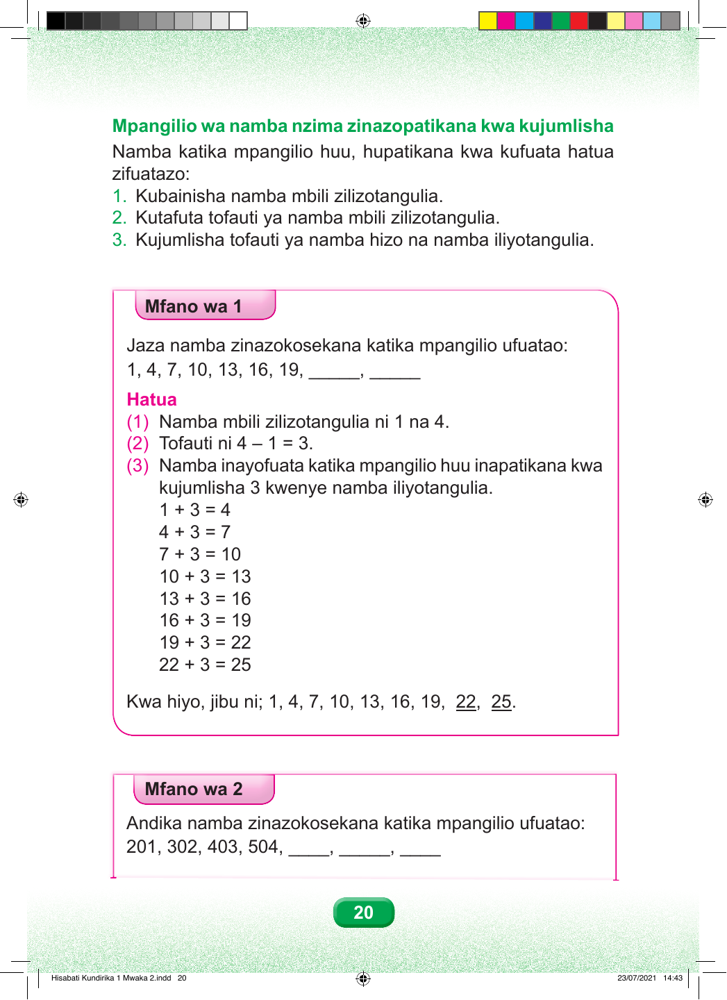

Mpangilio wa namba nzima zinazopatikana kwa kujumlisha. Namba katika mpangilio huu hupatikana kwa kufuata hatua zifuatazo. Hatua ya kwanza. Taja namba mbili zilizotangulia. Hatua ya pili. Tafuta tofauti ya namba mbili zilizotangulia. Hatua ya tatu. Jumlisha tofauti ya namba hizo na namba iliyotangulia. Mfano wa kwanza. Jaza namba zinazokosekana katika mpangilio ufuatao. Soma mpangilio kutoka kulia kwenda kushoto. Upande wa kulia kuna nafasi mbili zilizo wazi. Tukisogea kushoto tunakutana na: kumi na tisa, kumi na sita, kumi na tatu, kumi, saba, nne, na moja. Hatua ya kwanza. Namba mbili zilizotangulia ni moja na nne. Hatua ya pili. Tofauti ni nne kutoa moja, ni sawa na tatu. Hatua ya tatu. Namba inayofuata katika mpangilio huu inapatikana kwa kujumlisha tatu kwenye namba iliyotangulia. Fuata hesabu kutoka juu kwenda chini. Moja jumlisha tatu ni sawa na nne. Nne jumlisha tatu ni sawa na saba. Saba jumlisha tatu ni sawa na kumi. Kumi jumlisha tatu ni sawa na kumi na tatu. Kumi na tatu jumlisha tatu ni sawa na kumi na sita. Kumi na sita jumlisha tatu ni sawa na kumi na tisa. Kumi na tisa jumlisha tatu ni sawa na ishirini na mbili. Ishirini na mbili jumlisha tatu ni sawa na ishirini na tano. Kwa hiyo, mpangilio kamili ni: moja, nne, saba, kumi, kumi na tatu, kumi na sita, kumi na tisa, ishirini na mbili, na ishirini na tano. Namba zilizokosekana ni ishirini na mbili na ishirini na tano. Mfano wa pili. Andika namba zinazokosekana katika mpangilio ufuatao. Soma mpangilio kutoka kulia kwenda kushoto. Upande wa kulia kuna nafasi tatu zilizo wazi. Tukisogea kushoto tunakutana na: mia tano na nne, mia nne na tatu, mia tatu na mbili, na mia mbili na moja. Endeleza mpangilio kwa kuandika namba zinazokosekana.